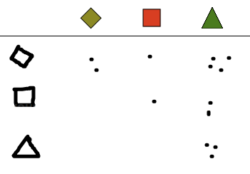

Solution
Pour chaque forme qui entre dans la maison, on peut dessiner un point en-dessous de la forme correspondante.
Par exemple, au cours d'une partie, on peut obtenir le dessin ci-dessous.

Ce dessin indique que l'on a vu entrer 1 losange, 3 carrés, 1 triangle, 3 hexagones, et 2 étoiles.
Pour chaque forme qui entre dans la maison, on peut dessiner un point en-dessous de la forme correspondante. Pour chaque forme qui sort de la maison, on peut masquer le point par un trait.
Par exemple, au cours d'une partie, on peut obtenir le dessin ci-dessous.

Ce dessin indique que l'on a vu entrer 2 losanges dont 1 est ressorti, qu'on a vu rentrer 4 carrés dont 2 sont ressortis, qu'on a vu rentrer 4 triangles dont 3 sont ressortis, et qu'on a vu rentrer 4 hexagones sans qu'aucun ne soit ressorti.
Pour noter les paires de formes qui rentrent dans la maison, plusieurs méthodes sont possibles, dont les trois suivantes :
La première méthode consiste à dessiner, avant de commencer, toutes les paires possibles. Cela prend un peu de temps car il faut dessiner 12 formes, mais ensuite c'est très facile. Il suffit d'ajouter un point pour chaque paire de forme qui entre dans la maison. Voici un exemple :

La deuxième méthode est encore plus efficace, car elle ne requiert de dessiner que 3 formes. On commence par dessiner les trois formes possibles sur la gauche. Lorsqu'une paire de forme arrive, on repère la ligne correspondant à la première forme, la colonne correspondant à la seconde forme, et on y dessine un point. Voici un exemple :

La troisième méthode ne requiert aucun dessin préalable. L'idée est d'utiliser des traits. Pour chaque paire de forme qui entre dans la maison, on trace un trait reliant les deux formes qui constitue la paire. Voici un exemple :

Cette représentation requiert néanmoins un peu plus de soin que les autres pour bien s'organiser pendant la partie, afin d'être capable de détecter le moment où la maison contient 3 paires identiques.
C'est de l'informatique !